Uso básico de Drive
Al ingresar a Drive encontramos algo como esto.
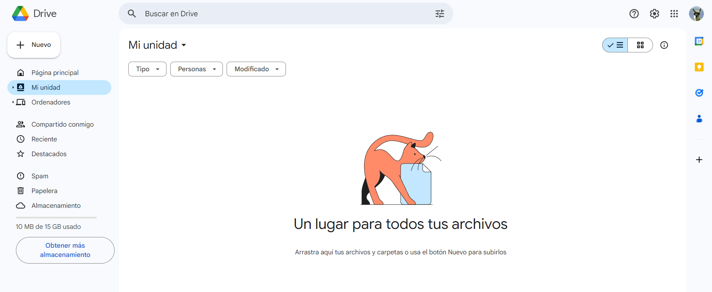
Almacenar archivos
Para almacenar archivos desde nuestro dispositivo (PC, Smartphone, tablet) tenemos varias opciones.
Utilizando el botón "Nuevo"
En la esquina superior izquierda pulsamos en "Nuevo".
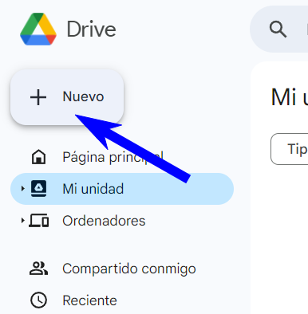
Elegimos la opción "Subir archivo"
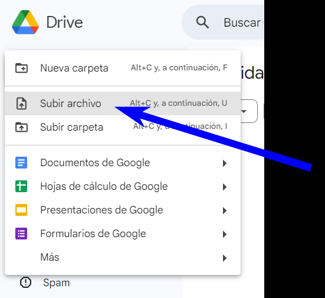
Luego elegimos nuestros archivos desde el explorador.
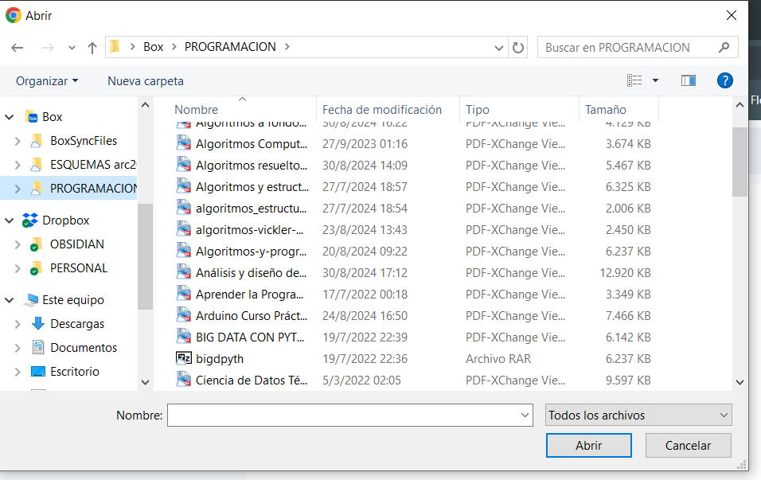
Arrastrando
Esta opción es la más simple. Seleccionamos los archivos/carpetas que queremos subir y los arrastramos hasta la ventana, soltamos y comienza la carga.
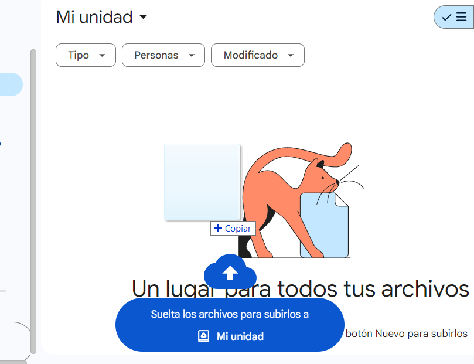
Creando desde Drive mismo
También si nos es necesario podemos crear nuestros archivos ofimáticos desde Drive. Para ello pulsamos en "Nuevo" y seleccionamos el tipo de archivo que queremos crear.
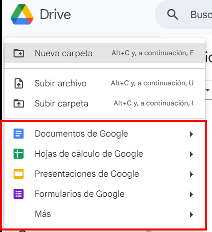
NOTA: Estos "archivos" trabajan directamente en la nube y para descargarlos vamos a tener que convertirlos.
Crear carpetas desde Drive
Para crear pulsamos en "Nuevo" y elegimos la opción correspondiente.
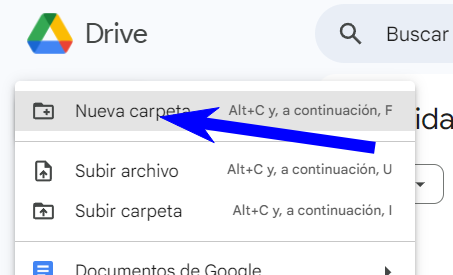
Para moverlas, simplemente arrastramos.
Compartir archivos
Una de las principales funciones que tiene Drive es la de poder compartir archivos o carpetas con diferente niveles de acceso. Para hacerlo solo debemos contar con la dirección de email del destinatario. Hacemos clic derecho, "Compartir", "Compartir" nuevamente.
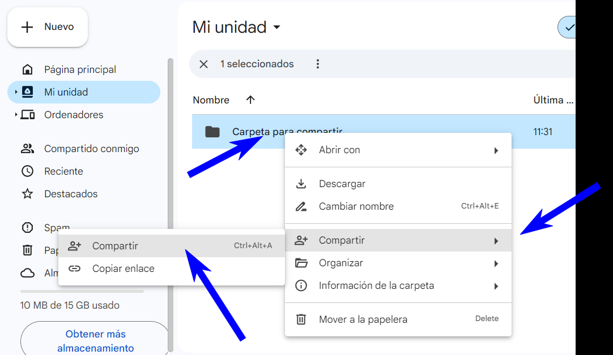
Escribimos la dirección de email del colaborador y pulsamos en "Hecho".
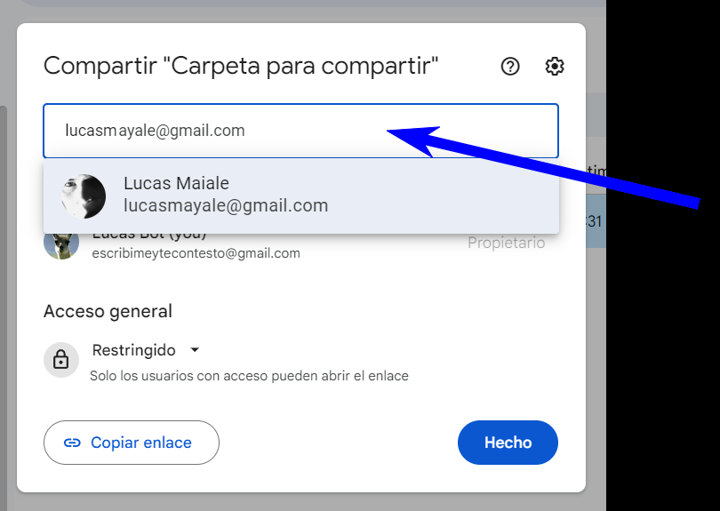
Se nos abre una segunda ventana en donde debemos elegir el tipo de acceso.
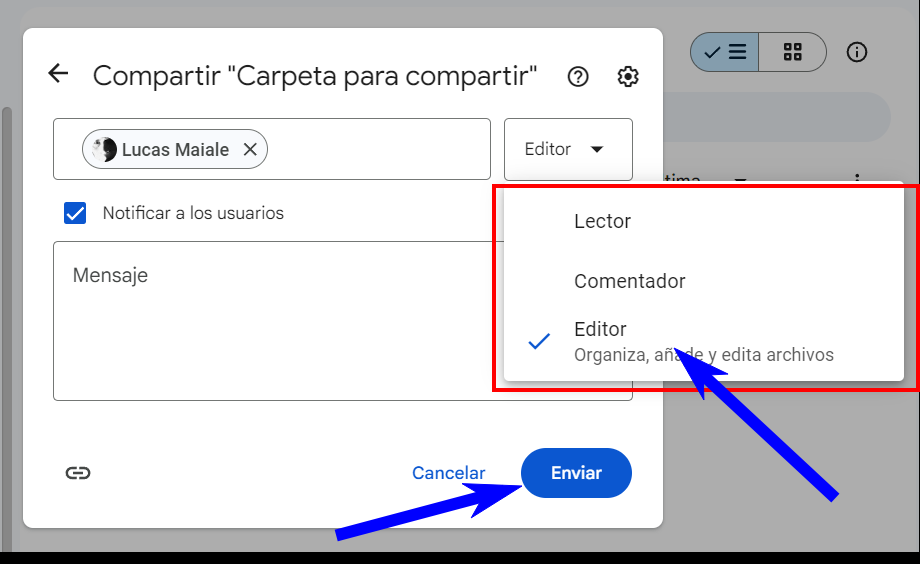
- Lector: solo puede ver el archivo.
- Comentador: además de poder ver, tiene la opción de comentar. Este modo es ideal si necesitamos por ejemplo una devolución y no queremos que nos modifiquen nada.
- Editor: puede modificar a gusto, tal como nosotros.
Colaborar en tiempo real
La colaboración en tiempo real no es más que la posibilidad de trabajar de modo sincrónico o asincrónico con un documento.
Cuando hay otra persona trabajando en el mismo documento, podemos ver en parte superior su avatar y en color la celda en donde está trabajando.
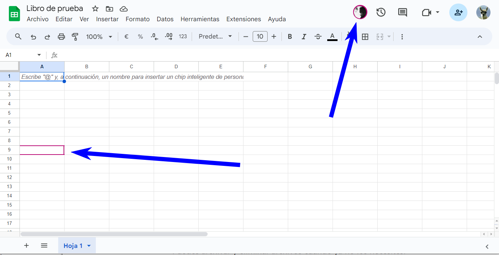
Búsqueda y búsqueda avanzada
Para buscar un archivo o carpeta, simplemente escribimos en el casillero de búsqueda. La mayoría de la veces vamos a encontrar lo que necesitamos.
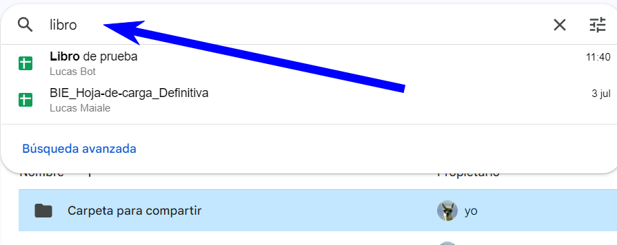
También podemos buscar de modo avanzado pulsando el ícono con "Tres rayas horizontales".
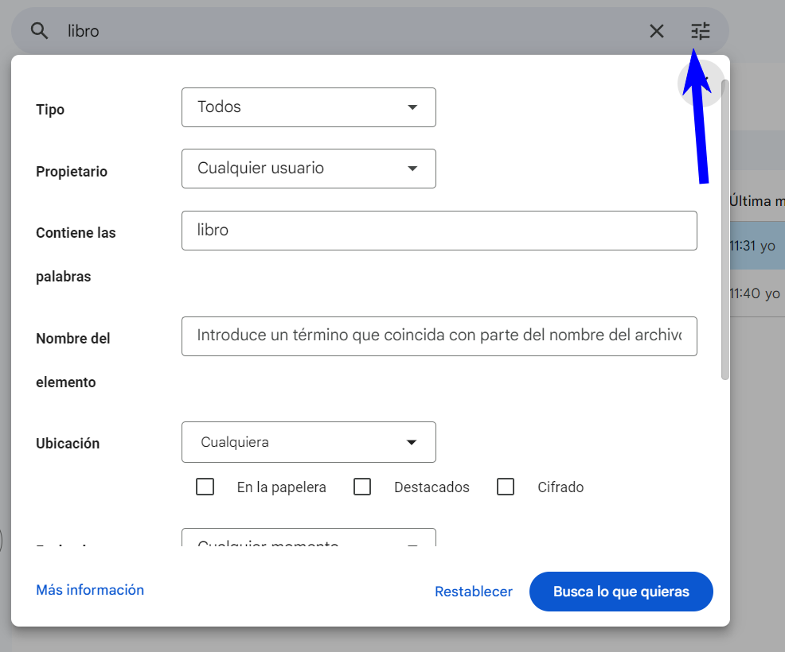
Esta opción nos permite entre otras opciones buscar por tipo de archivo, usuario o por nombre parcial.
Eliminación de archivos
Para eliminar archivos, hacemos clic derecho en el archivo/carpeta a eliminar y elegimos la opción "Mover a la papelera".
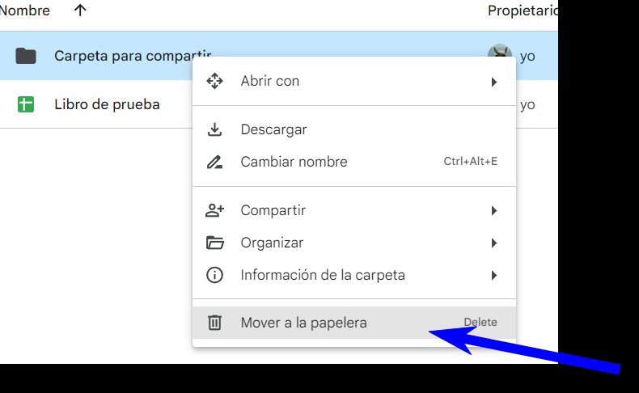
Tal como ocurre en Windows, esta eliminación no es definitiva a priori sino que queda en la "Papelera". Si queremos eliminarlo definitivamente, debemos hacerlo también desde allí.